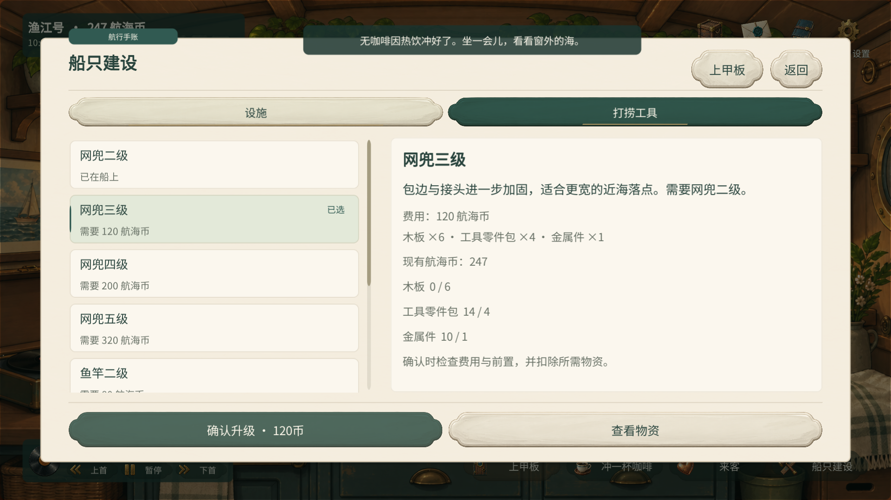
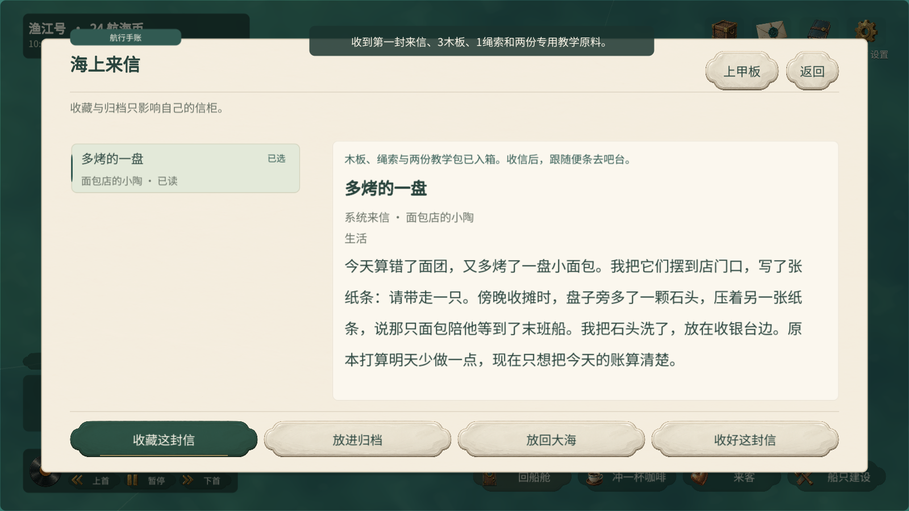
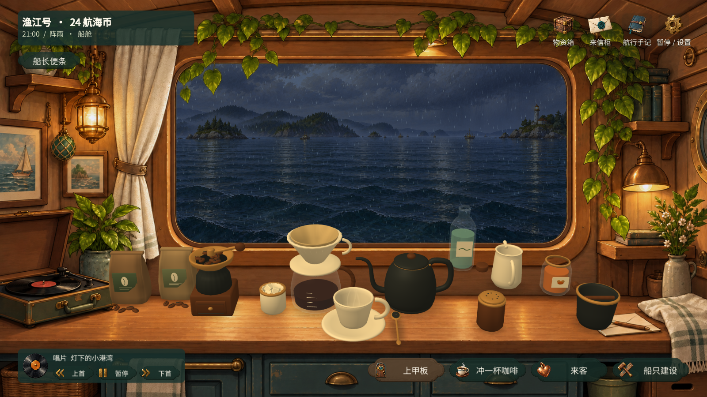

AI 游戏作品 / 海上经营
渔江咖啡.
开一间在海上漂流的咖啡馆。
玩家在甲板打捞物资和漂流瓶，回船舱冲泡咖啡，再用营业收入与材料改造渔船。

Unity · Windows 0.16.0 可玩开发版
截图与录屏采用同版隔离测试存档。
今天捞上来的东西，拿来煮咖啡、改船
常见物资漂到船边就能收。咖啡原料用来出杯，船材则和营业收入一起投入下一次升级。




按住倒水，松手停下
把滤杯放好，拿起水壶注水，再加料或搅拌。做错了可以弃杯重来。完成一杯才扣配方材料，把咖啡递给来客后结算收入。

熟客会再来，海上也会漂来信



当前默认离线收系统信。玩家短笺投递和抽取已完成本机联调。
回船舱听唱片，看天色慢慢变
从甲板回到船舱，可以看海、听唱片，也可以拿起桌上的器具练习冲泡。窗外随本地昼夜变换，偶尔有海鸟飞过。


